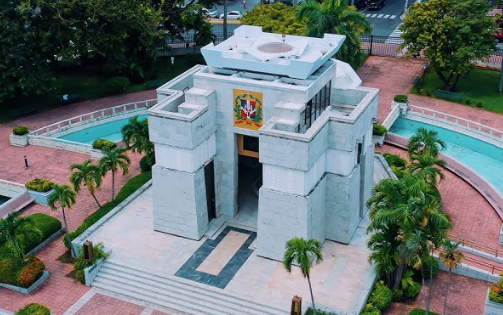
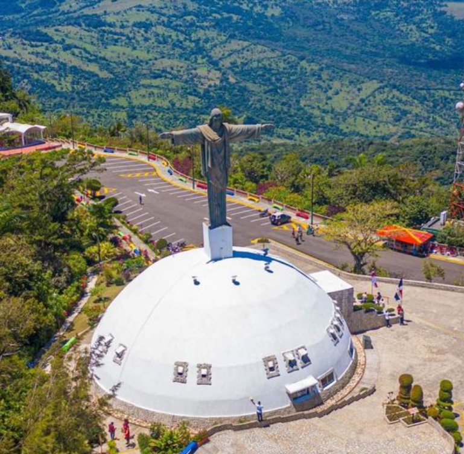
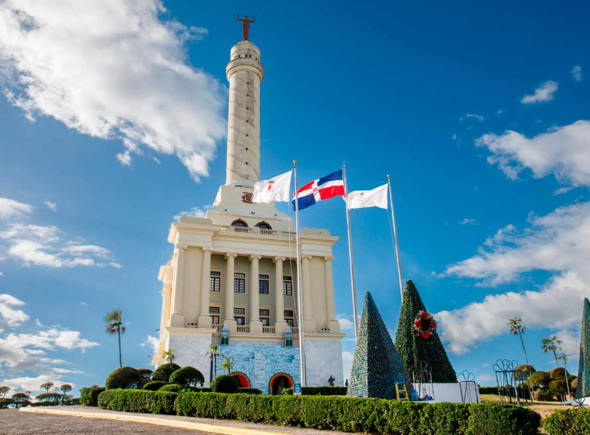

Altar de la Patria

El Altar de la Patria, ubicado en Santo Domingo en el Parque
Independencia, es un mausoleo que honra a los Padres de la Patria:
Juan Pablo Duarte, Francisco del Rosario Sánchez y Matías Ramón Mella.
Este monumento alberga los restos de estos héroes nacionales y está
decorado con mármol blanco, además de tener una llama eterna que
simboliza la libertad y la independencia dominicana. Es un lugar de
gran significación histórica y emocional para los dominicanos.
Cristo Redentor

El Cristo Redentor de Puerto Plata se encuentra en la cima del Pico
Isabel de Torres en Puerto Plata. Esta estatua de Jesucristo simboliza
la protección divina sobre la ciudad y sus habitantes. Con una altura
de aproximadamente 16 metros, es similar al famoso Cristo Redentor de
Río de Janeiro, aunque de menor tamaño. La estatua ofrece una
impresionante vista panorámica de la ciudad y del océano Atlántico,
haciendo de su ubicación un atractivo turístico notable.
Monumento de Santiago

El Monumento de Santiago, también conocido como el Monumento a los
Héroes de la Restauración, está situado en Santiago de los Caballeros.
Este monumento conmemora a los héroes de la Guerra de la Restauración
(1863-1865), quienes lucharon para restablecer la independencia
dominicana tras la anexión a España. Construido en 1944 bajo las
órdenes del dictador Rafael Trujillo, inicialmente se llamó "Monumento
a la Paz de Trujillo". Después de la muerte de Trujillo y el fin de su
régimen, el monumento fue rededicado a los héroes de la Restauración.
Con una altura de 67 metros, es una de las estructuras más
emblemáticas de Santiago y ofrece vistas panorámicas de la ciudad.